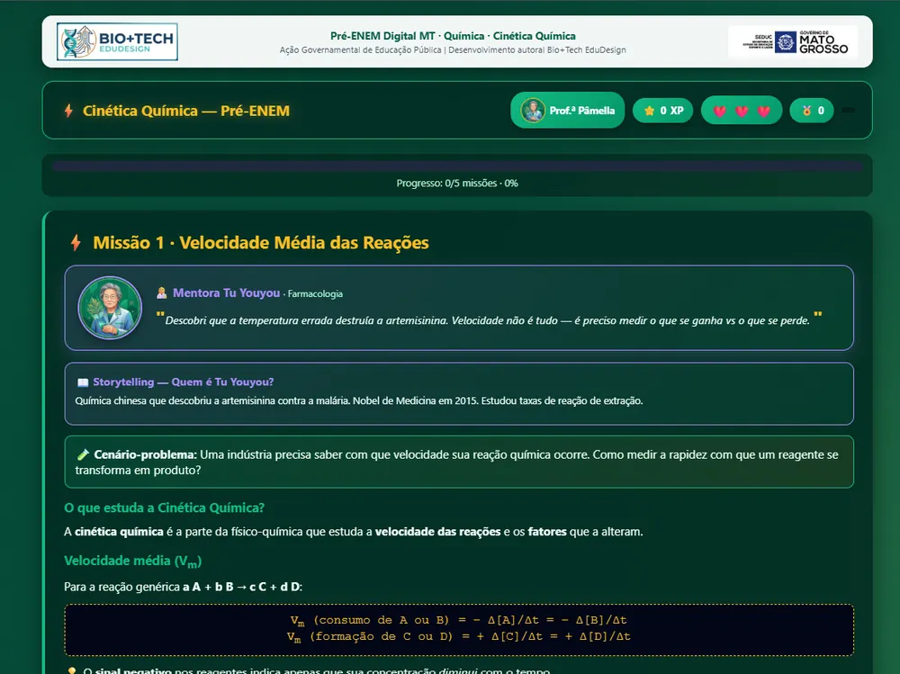

Cinética Química Interativa & Mentoria de Adaptação
Material interativo para exploração de velocidade de reação e fatores que influenciam a rapidez dos processos químicos. Acesse gratuitamente ou contrate a mentoria B2C.

Ficha do recurso
- Tipo
- REA: recurso educacional aberto
- Acesso
- Gratuito
- Público
- Professores de Química, Licenciandos em Ciências, Estudantes do Ensino Médio
- Habilidades BNCC
- EM13CN01EM13CNT103
- Habilidades BNCC Computação
- EM13TD04EM13TD05
- Licença
- CC BY-SA 4.0 (ver licença)
- Código-fonte
- github.com/Bio-Tech-Edu/cinetica
Sobre o recurso
Este Recurso Educacional Aberto (REA) é voltado ao estudo da Cinética Química. A ferramenta permite a análise dinâmica das variáveis de velocidade de reação (concentração, temperatura, superfície de contato e catalisadores) e estimula a construção de explicações científicas a partir de observações e dados reais.
A proposta utiliza a metodologia de aprendizagem baseada em jogos, simulação interativa de colisões eficazes e avaliação formativa, eliminando a necessidade de cálculos de taxas de reação desconectados da realidade. O estudante atua como um investigador científico, manipulando reagentes e observando em tempo real os gráficos de consumo e formação de produtos.
Por ser um REA distribuído sob a licença CC BY-SA 4.0, qualquer educador pode acessar gratuitamente seu código-fonte, modificar suas atividades e utilizá-lo livremente em sala de aula. Contudo, se você precisar de um suporte personalizado em menor tempo e de um acompanhamento sob medida, poderá contratar a nossa mentoria individual e ter acesso exclusivo à nossa comunidade de educadores.
Como usar em sala de aula
- Antes da atividade (Preparação): Apresente o conceito da teoria das colisões. Atribua aos estudantes o desafio de acelerar ou desacelerar uma reação específica no simulador virtual.
- Durante a atividade (Experimentação e Simulação): Em duplas, os estudantes alteram a concentração dos reagentes e a temperatura do meio, interpretando os gráficos de curva de reação gerados pelo software.
- Depois da atividade (Síntese e Discussão): Conduza um debate integrador associando os achados virtuais a contextos práticos, como a conservação de alimentos na geladeira e o papel dos catalisadores nos motores automotivos.
Habilidades trabalhadas
- BNCC Ciências da Natureza:
EM13CN01: Analisar processos de conservação e transformação de matéria e energia para prever parâmetros e evoluções de sistemas cinéticos.EM13CNT103: Utilizar o raciocínio quantitativo e a interpretação de tabelas e gráficos para analisar a rapidez dos processos químicos.
- BNCC Computação:
EM13TD04: Utilizar softwares de simulação e laboratórios virtuais para a compreensão de fenômenos cinéticos.EM13TD05: Utilizar ferramentas computacionais para modelar e solucionar problemas complexos.
Serviço Especializado: Mentoria AdaptaREA (B2C)
Deseja aplicar o REA Cinética nas suas turmas de forma 100% personalizada para a realidade da sua escola, mas não tem tempo para adaptar o material sozinho ou se sente inseguro na condução técnica?
A Bio+Tech EduDesign oferece a Mentoria AdaptaREA: Ciências da Natureza e Cultura Digital, um acompanhamento direto ao professor (B2C) com suporte prático e individualizado para você dominar o recurso sem sobrecarga.
O que inclui o pacote de treinamento (R$ 75,00 via Hotmart):
- Adaptação Orientada do REA: Ajuste das rotas didáticas e missões do recurso ao tempo de aula e à infraestrutura tecnológica disponível na sua instituição (laboratório, Chromebooks, celulares ou projetor).
- Encontro 1 (1 hora): Diagnóstico e Co-criação didática. Alinhamento do plano de aula ao seu programa escolar, configuração técnica dos acessos e estruturação dos roteiros de simulação.
- Encontro 2 (1 hora): Simulação da regência e avaliação formativa. Capacitação na orquestração dos dados de aprendizagem, mediação dos quizzes do REA e resolução de eventuais gargalos de implementação.
- Suporte Direto: Canal direto via WhatsApp com a especialista Pâmella Araújo Balcaçar para tirar dúvidas de execução entre os dois encontros.
- Comunidade Exclusiva: Acesso vitalício à nossa rede de professores inovadores para troca contínua de planos de aula, ideias e materiais.
Como contratar a consultoria B2C
O serviço de treinamento é adquirido de forma simples e segura pelo Marketspace da Hotmart. Após a confirmação da inscrição, nossa equipe entrará em contato para agendar seus 2 encontros individuais de 1 hora nos horários mais convenientes para a sua rotina docente.